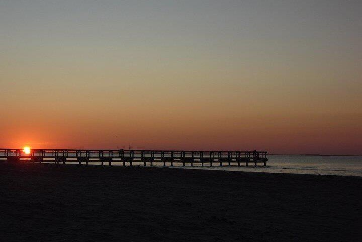
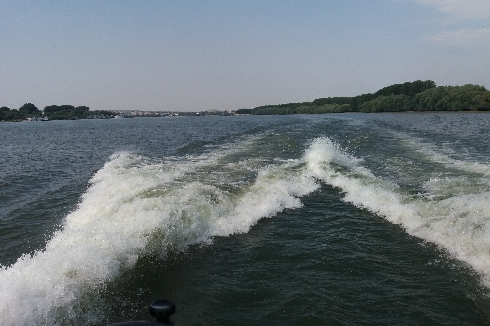
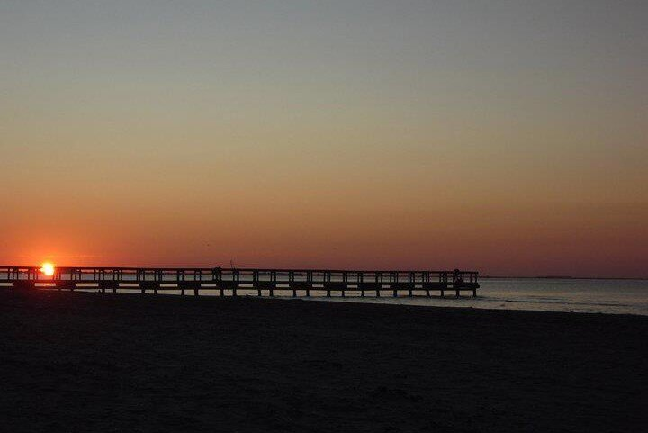
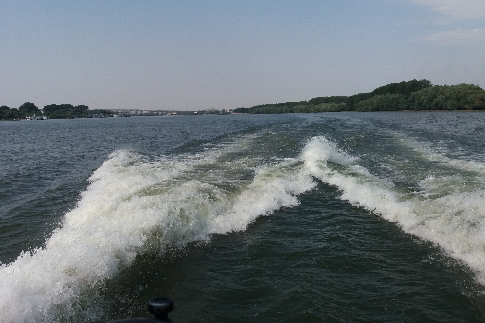
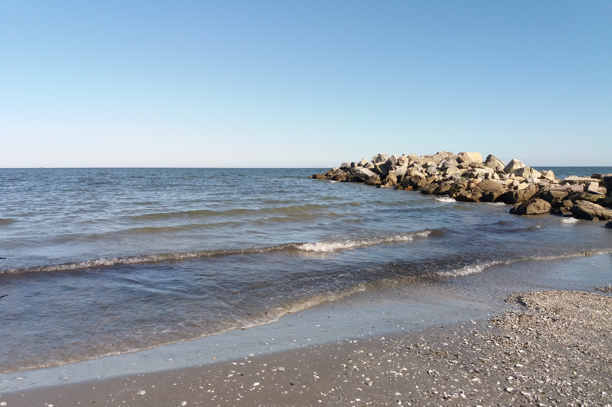
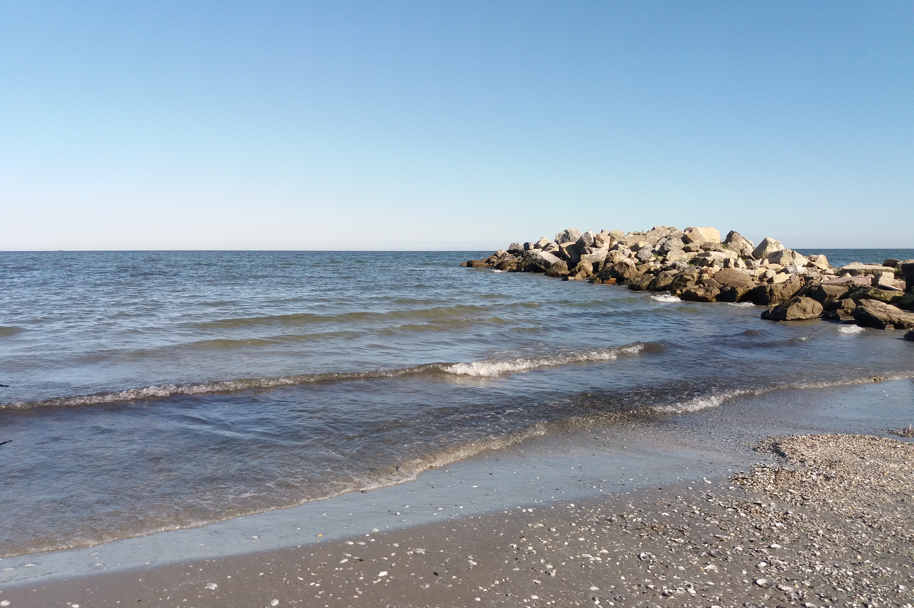
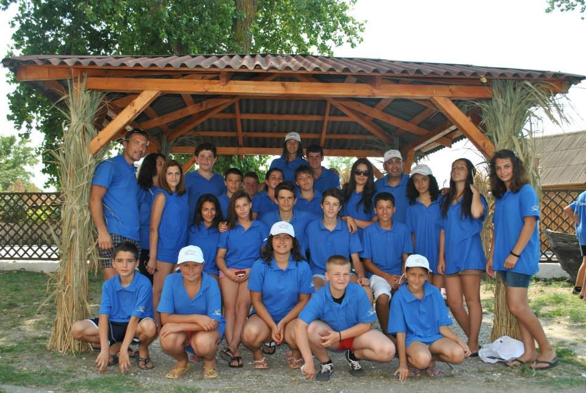
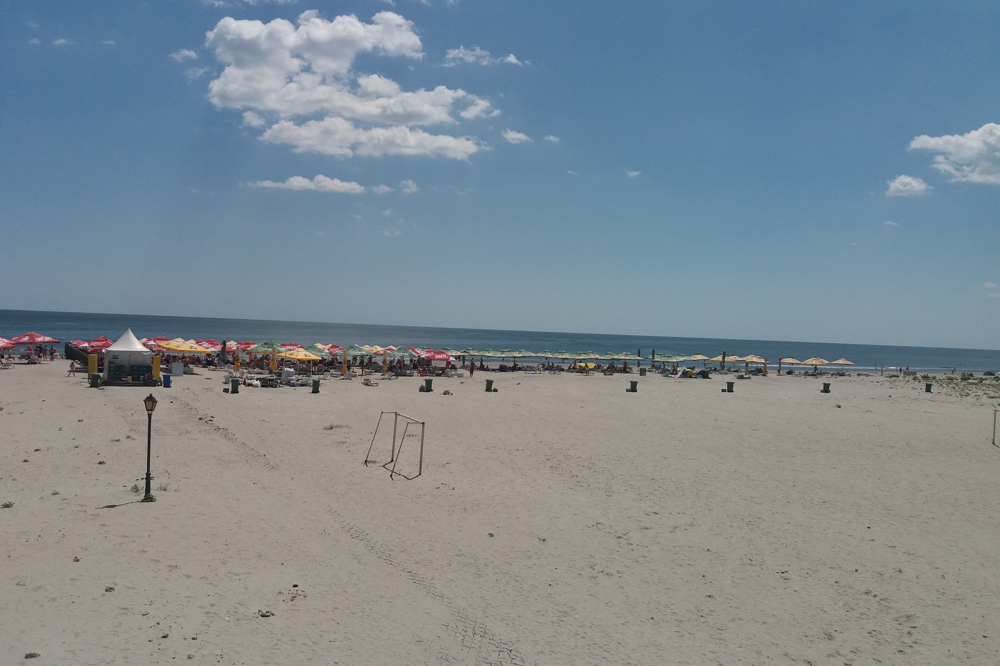
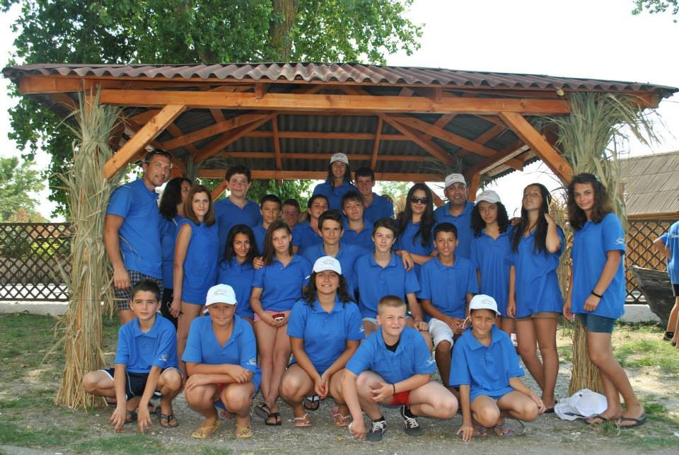
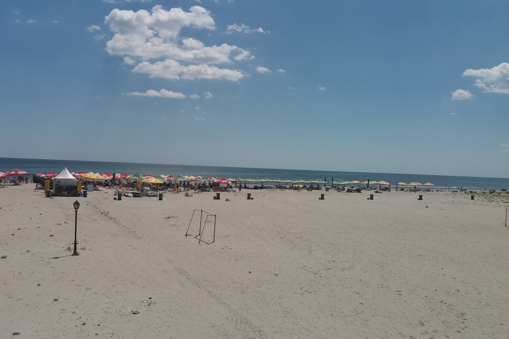

Sulina, Romania
Because I'm aromanian and I attended some classes for learning my mother language, I had the opportunity every summer to visit Romania, specifically one lovely
town called Sulina. This town is the easternmost point of Romania. The bus drive was exhausting but everything was worth it when got to sail by boat on river Dunav.
The vacations to Romania were one of the best parts of my childhood. Sulina was the place were I met so many cool people, laughed till tears fell down my cheeks,
stayed in the water till dawn, went on my first beach parties and just learned how to have fun.
We made friends from all over Europe, partied, enjoyed the enormous beach waves,
watched the sunset, had art classes, competed in different sports, like basketball, football and many other activities.
Sadly, I wasn't able to find pictures from Sulina through the years, but you can still take a look at the image gallery below.
 



 

 


